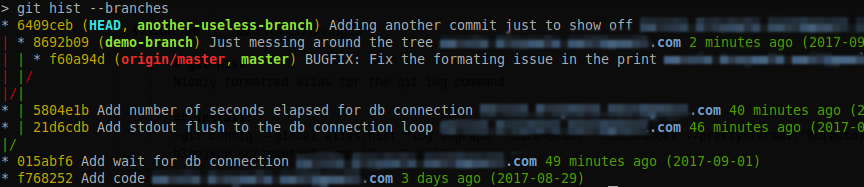

Mémos, raccourcis et améliorations de GIT
1.Commandes de base, informations sur Git
mettre le pdf en téléchargement
2.Git à travers le proxy de la fac de Toulon
2.1 Gestion du proxy
Privilégier l’accès à des dépôts git via https pour éviter des soucis avec le proxy.
Cependant, si on a l’erreur suivante lors d’un git clone, ou git push par exemple:
fatal: unable to access 'https://gitlab.osupytheas.fr/mazoyer/medoc/': Received HTTP code 407 from proxy after CONNECTIl faut alors passer en ssh sur son projet (que l’on nommera ici myproject). Attention, penser à changer mylogin en votre propre login:
git remote -v
git remote set-url origin git@gitlab.osupytheas.fr:mylogin/myproject.gitSi les deux solutions ne sont pas satisfaisantes, nous sommes preneurs de votre retour (camille.mazoyer@ird.fr)
3 Pour aller plus loin, améliorations GIT
3.1 Faire référence à des bug dans un commentaire git
On peut lister et noter les bugs dans un bug tracker dans le projet git de gitlab (rubrique Issues de votre gitlab). Ensuite, dans un commentaire de git commit (voir link-to-the-issue-number-on-github-within-a-commit-message), on y fait référence avec les mots clefs suivants (pour le bug numéro 5 par ex):
[debug] Résolution du bug empechant la fermeture des fichiers3.2 Différences plus visuels avec git -d file
Pour voir les git diff a travers vimdiff, beaucoup plus visuel. Ensuite, on peut taper git d fichier.F90 pour voir la différence entre la version pushée et les modif locales.
git config --global diff.tool vimdiff
git config --global difftool.prompt false
git config --global alias.d difftoolgit d --color-words file.F3.3 Outil pour faciliter la fusion de modifications, le “merge”
Voir how-to-resolve-merge-conflicts-in-git-repository :
git config merge.tool vimdiff
git config merge.conflictstyle diff3
git config mergetool.prompt false3.5 Commande “log” plus visuelle
Voir pretty-git-branch-graphs.
Taper (une seule fois) la commande suivante dans un terminal
git config --global alias.adog "log --all --decorate --oneline --graph"Puis vous pouvez l’utiliser quand nécessaire via:
git log --graph --abbrev-commit --decorate --date=relative --all3.6 Commande “hist”
Taper (une seule fois) la commande suivante dans un terminal
git config --global alias.hist "log --graph --date-order --date=short \
--pretty=format:'%C(auto)%h%d %C(reset)%s %C(bold blue)%ce %C(reset)%C(green)%cr (%cd)'"L’utilisation se fait de la manière suivante:
git hist # Show the history of current branch
git hist --all # Show the graph of all branches (including remotes)
git hist master devel # Show the relationship between two or more branches
git hist --branches # Show all local branches
#Add --topo-order to sort commits topologically, instead of by date (default in this alias)Par exemple:  Les avantages de cette commande sont les suivants:
- ressemble à “plain –decorate” avec des couleurs différentes pour chaque branche
- ajout de l’email de la personne qui commit
- ajout des dates
- tri des commits par dates
3.4 Comment ne pas tenir compte des changements de permissions sur les fichiers
Cela peut être utile si on utilise notre dépôt Git sur plusieurs machines et que tous les comptes n’ont pas les mêmes permissions. Je recommande de taper cette commande (une seule fois ) dans chacun de vos projets (voir git-comment-faire-pour-ignorer-les-changements-de-mode-de-fichier-chmod).